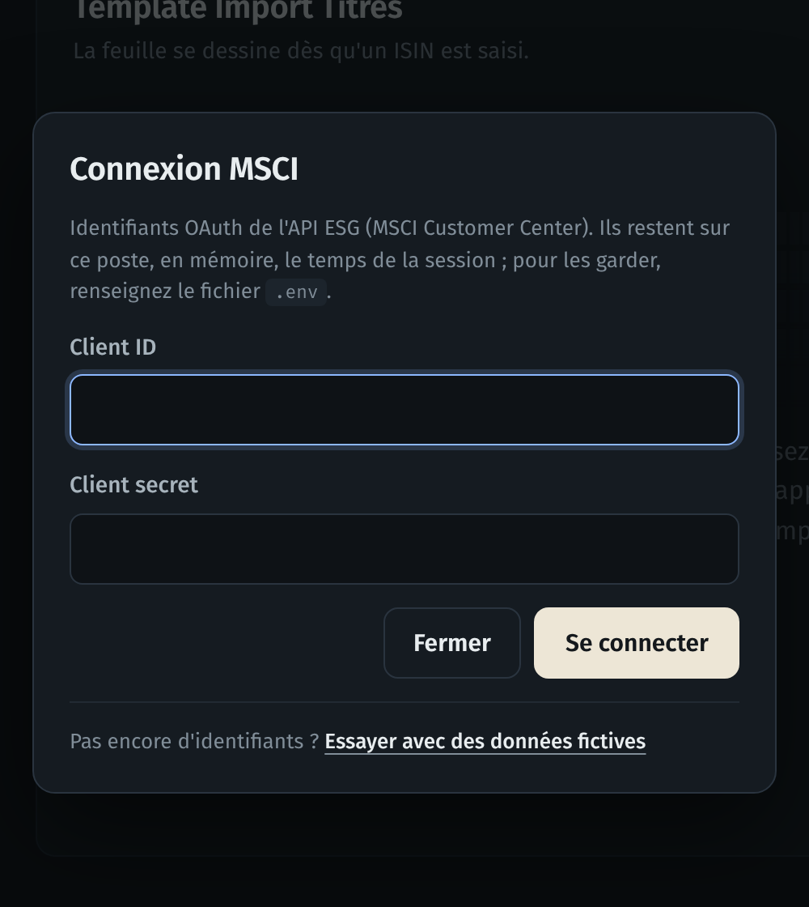
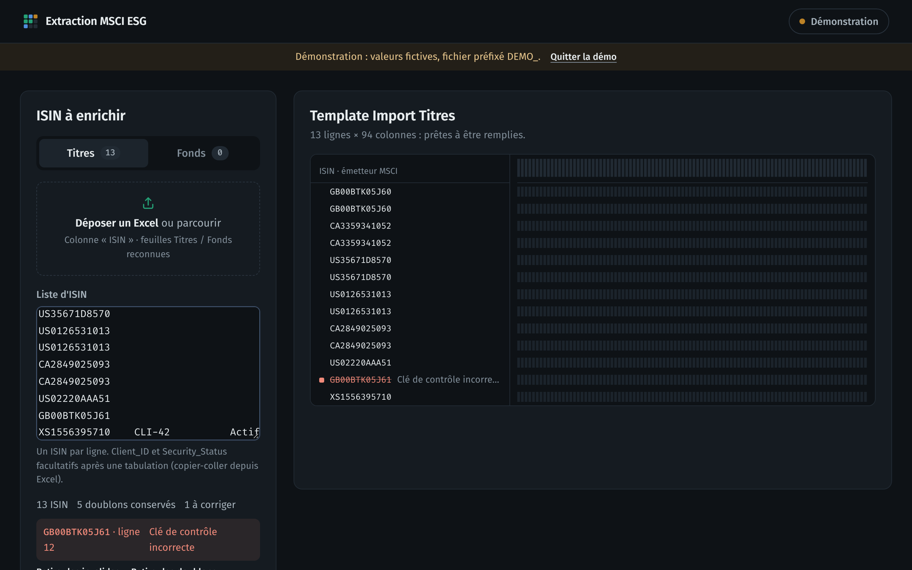
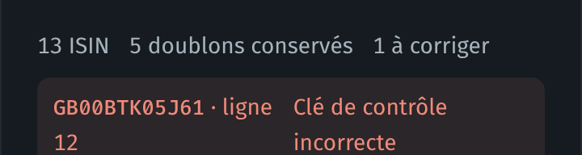
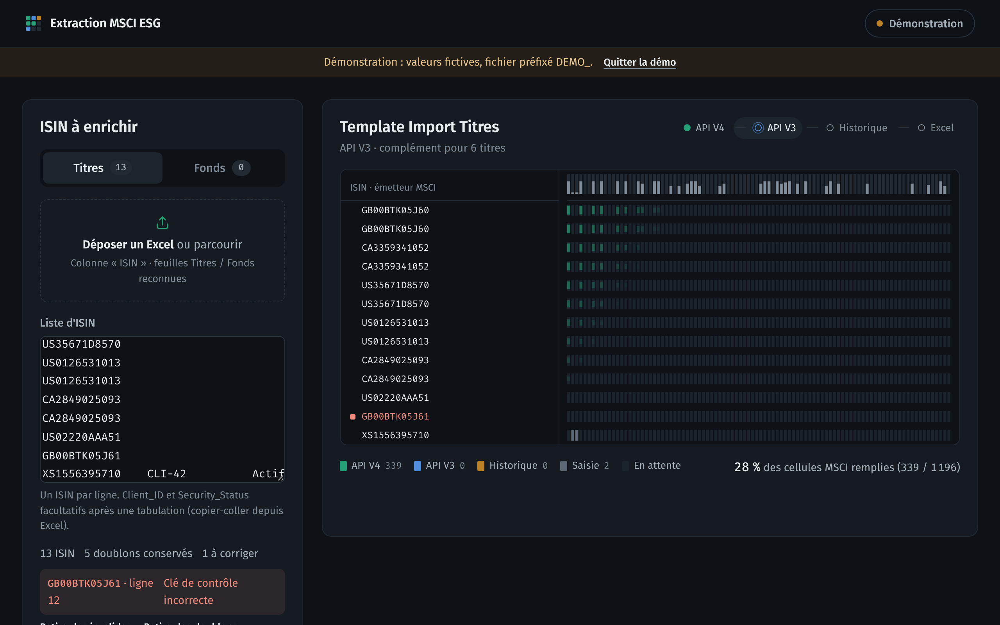
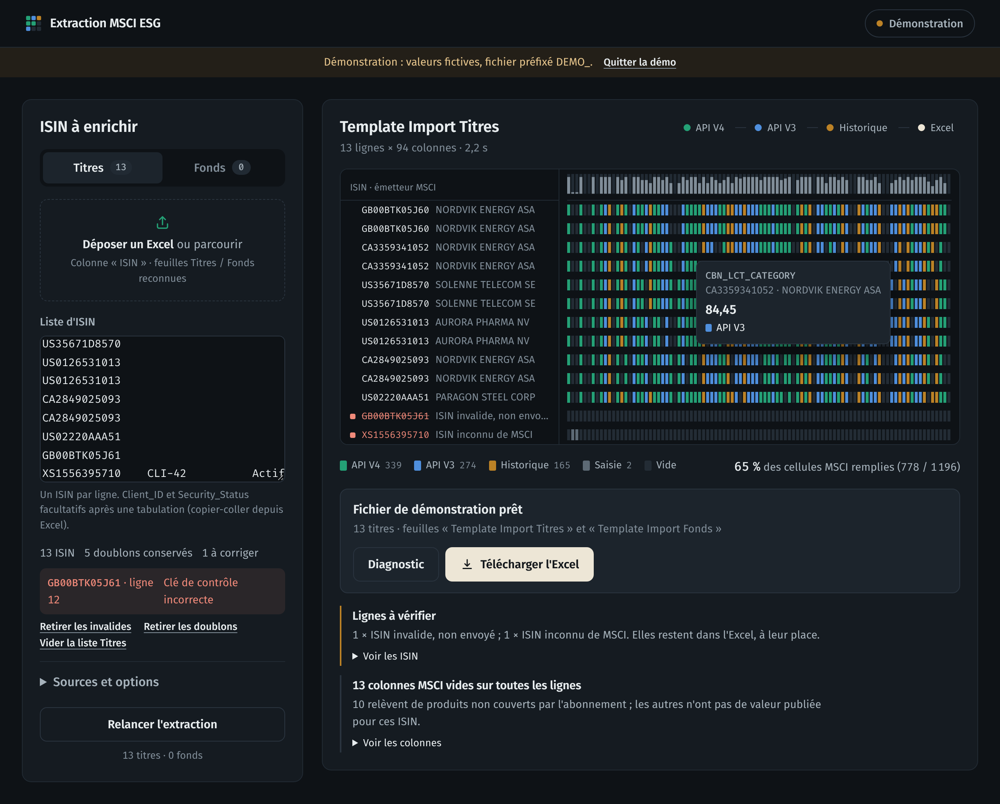
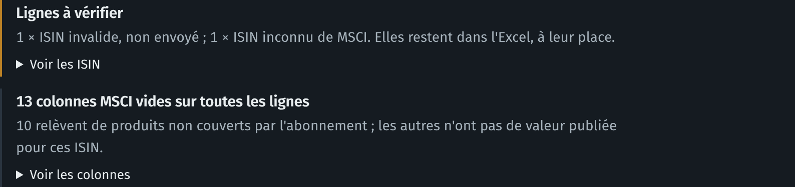

Guide pas à pas pour utiliser l'application sans savoir coder, puis pour reprendre et faire évoluer le projet.
Décompresser le dossier, double-cliquer sur lancer.bat, cliquer sur Se connecter à MSCI, coller ses ISIN, cliquer sur Extraire les données, puis sur Télécharger l'Excel. Le reste du guide détaille chacune de ces étapes.
Vous avez une liste de codes ISIN (actions, obligations, fonds). L'application va chercher chez MSCI les données ESG correspondantes et vous rend un fichier Excel prêt à importer, au format exact attendu par l'équipe.
127.0.0.1).MSCI propose plusieurs « portes d'entrée » à ses données, avec des droits différents selon votre abonnement. L'application les essaie l'une après l'autre, et ne demande à la suivante que ce qui manque encore :
Ces trois couleurs se retrouvent dans l'application : chaque case du fichier prend la couleur de la source qui l'a remplie.
| Il vous faut | Où le trouver |
|---|---|
| Un PC Windows | Windows 10 ou 11. Aucun droit administrateur n'est nécessaire. |
| Le dossier du projet | Sur GitHub, dépôt NoaRobin/MSCI-Grand-Emir-Mehdi : bouton vert Code, puis Download ZIP. Demandez l'accès au dépôt à la personne qui le gère s'il ne s'affiche pas. |
| Des identifiants MSCI | Un Client ID et un Client secret pour l'API ESG, créés sur le MSCI Customer Center (onglet OAuth 2.0 Client IDs). Demandez-les au responsable du contrat MSCI. Ce ne sont pas vos identifiants de connexion personnels. |
| Vos ISIN | Dans un fichier Excel ou CSV, ou à coller directement. |
L'application a un mode démonstration avec des données fictives : parfait pour la découvrir ou former quelqu'un. Il est proposé dans la fenêtre de connexion.
L'application est écrite en Python. Vous n'avez rien à faire : si Python n'est pas déjà sur le poste, le lanceur propose de le télécharger tout seul dans le dossier du projet (voir page suivante).
.zip téléchargé, puis Extraire tout…, puis Extraire. Choisissez un dossier simple, par exemple Documents\MSCI.
Windows laisse ouvrir les fichiers d'un zip sans l'extraire, mais l'application ne trouvera pas ses fichiers. Le lanceur vous le signale le cas échéant.
lancer.batC'est le seul fichier à ouvrir. Une fenêtre noire s'affiche : c'est normal, c'est le « moteur » de l'application..python) ; rien n'est installé sur Windows.http://127.0.0.1:8765. Gardez la fenêtre noire ouverte pendant toute l'utilisation : la fermer arrête l'application.Les fois suivantes, le lanceur saute directement à la dernière étape. Si vous double-cliquez alors que l'application est déjà ouverte, il rouvre simplement l'onglet. Voici ce qu'affiche la fenêtre noire au premier lancement :
À l'ouverture, le bouton en haut à droite indique Se connecter à MSCI, avec un point rouge. Cliquez dessus.

DEMO_..env.example et renommez la copie en .env (sans rien avant le point)..env avec le Bloc-notes et complétez les deux lignes : MSCI_CLIENT_ID=… et MSCI_CLIENT_SECRET=…lancer.bat.Ce fichier contient un secret : ne l'envoyez jamais par e-mail et ne le partagez pas. Chacun utilise ses propres identifiants.

ISIN. Des feuilles nommées « Titres » et « Fonds » sont rangées automatiquement dans le bon onglet.ISIN, Client_ID et Security_Status ensemble : elles seront recopiées dans le fichier final.

Le lien Sources et options, sous la liste, permet de désactiver une source ou le cache. Par défaut, tout est activé ; il n'y a normalement rien à changer.
| Option | Effet |
|---|---|
| Compléter avec l'API V3 | Interroge la V3 pour les cases encore vides après la V4. |
| Compléter avec l'historique | Prend la dernière valeur publiée par MSCI pour ce qui manque encore. Sa date est visible au survol. |
| Valeurs de l'émetteur parent | Pour une obligation ou une filiale sans notation propre, reprend celle de la société mère. |
| Réutiliser les réponses des 6 dernières heures | Relancer la même liste est instantané : seuls les appels manquants sont refaits. À décocher pour forcer des données fraîches. |

import_msci_AAAAMMJJ_HHMM.xlsx arrive dans votre dossier Téléchargements. Il contient toujours les deux feuilles du modèle.| Couleur | Signification |
|---|---|
| Vert | Valeur fournie par l'API V4 (source principale). |
| Bleu | Valeur fournie par l'API V3, pour une case que la V4 laissait vide. |
| Ambre | Dernière valeur publiée, issue de l'historique. Vérifier la date au survol. |
| Gris | Recopié depuis votre saisie (Client_ID, Security_Status, ISIN du fonds). |
| Sombre | Case vide : MSCI n'a pas de valeur, ou votre abonnement ne la donne pas. |
| Message | Ce qu'il faut faire |
|---|---|
| ISIN invalide, non envoyé | Corriger la faute de frappe dans la liste. |
| ISIN inconnu de MSCI | Vérifier le code ; MSCI ne couvre pas tous les titres. |
| Aucune donnée retournée | MSCI connaît le titre mais n'a rien envoyé. |
| Plusieurs fonds MSCI pour cet ISIN | Cas rare pour les fonds : à vérifier à la main avec MSCI. |
| Erreur MSCI sur ce lot | Panne passagère : relancer. Grâce au cache, seules ces lignes sont redemandées. |
Un point ambre signale « Références seules » : le nom et les identifiants sont connus, mais aucune donnée ESG n'est accessible pour ce titre.

| Ce que vous voyez | Ce qu'il faut faire |
|---|---|
| La fenêtre noire s'ouvre et se ferme aussitôt | Le dossier n'est probablement pas décompressé : faire Extraire tout… sur le zip, puis relancer lancer.bat depuis le dossier extrait. |
| « Windows a protégé votre ordinateur » sans bouton Exécuter quand même | Votre poste bloque les fichiers téléchargés. Supprimer le dossier extrait, faire un clic droit sur le .zip téléchargé, Propriétés, cocher Débloquer en bas, OK, puis extraire à nouveau. Sinon, demander à l'IT d'autoriser le dossier. |
| « Le téléchargement a échoué » | Le proxy de l'entreprise bloque python.org. Demander à l'IT d'installer Python 3.10 ou plus récent (Centre logiciel), puis relancer : le lanceur l'utilisera. |
| Le navigateur ne s'ouvre pas | Ouvrir soi-même Chrome ou Edge à l'adresse affichée dans la fenêtre noire, en général http://127.0.0.1:8765. |
| « OAuth : HTTP 401 » | Client ID ou Client secret erroné. Vérifier le copier-coller (pas d'espace en trop) ou en générer un nouveau sur le MSCI Customer Center. |
| « Certificat TLS refusé » | Le proxy de l'entreprise intercepte les connexions. L'application utilise normalement les certificats de Windows ; si le message persiste, demander à l'IT le certificat de l'entreprise et l'indiquer dans .env (REQUESTS_CA_BUNDLE=…). |
| « MSCI injoignable » | Pas d'accès Internet ou proxy bloquant api.msci.com : vérifier la connexion, sinon contacter l'IT. |
| Beaucoup de colonnes vides « non autorisées » | Ces données ne font pas partie de votre abonnement MSCI. L'application ne peut pas les obtenir : voir avec le responsable du contrat MSCI. |
| « L'API V3 a refusé l'accès » | Normal si votre compte n'a pas la V3. Les autres sources ont été utilisées. |
| Message « La liste a changé depuis cette extraction » | Vous avez modifié la liste après l'extraction : relancer pour un fichier à jour. |
Joignez une capture de la fenêtre noire et, si possible, le fichier Diagnostic de l'extraction (en interne uniquement : il contient vos ISIN). Le diagnostic contient les identifiants d'appel trace_id que le support MSCI demandera. Il ne contient jamais vos identifiants MSCI.
Cette partie s'adresse à la personne qui maintient l'outil. Pas besoin d'être développeur pour les tâches courantes (modifier une colonne, mettre à jour les identifiants) ; un peu de Python aide pour le reste.
Chaque colonne du modèle a une règle dans app/data/mapping.json, dans le même ordre que dans Excel. Exemple :
candidates : les codes MSCI essayés dans l'ordre ; le premier qui a une valeur l'emporte. Les codes exacts se trouvent dans le catalogue MSCI ESG & Climate Historical Data API Catalog, colonne Factor Column Header.kind : input (recopié depuis la saisie), input_isin (l'ISIN saisi), blocked (laissé vide volontairement).lancer.bat. Si une virgule ou un guillemet manque, l'application refuse de démarrer et indique pourquoi.Il faut modifier les deux fichiers ensemble : la feuille dans app/data/template.xlsx, et la règle correspondante dans mapping.json, au même rang. L'application vérifie au démarrage que les deux correspondent exactement, et refuse de démarrer sinon : on ne peut pas produire un fichier au mauvais format par accident.
/funds ne reconnaît pas est traduit en identifiant MSCI (MDSUID) grâce au référentiel /coverage.template.xlsx est remplie ligne à ligne ; les en-têtes et styles d'origine sont conservés.| Tâche | Comment |
|---|---|
| Lancer les tests | Dans un terminal ouvert dans le dossier du projet : python -m pip install pytest puis python -m pytest. 19 tests, sans appel à MSCI, en quelques secondes. |
| Changer le port (8765) | Ajouter PORT=8800 dans .env. Si le port est pris, l'application essaie automatiquement les 9 suivants. |
| Limiter les produits Fonds | MSCI_FUND_PRODUCTS=Nom exact du produit dans .env (plusieurs noms séparés par ;). Par défaut, tous les produits Fonds du compte sont utilisés. |
| Mettre à jour les bibliothèques | Les bibliothèques sont copiées dans vendor/ pour fonctionner sans Internet ni pip. Pour les mettre à jour : télécharger les versions récentes avec pip download --only-binary=:all: -d wheels requests openpyxl truststore, décompresser chaque .whl (un zip) dans vendor/, puis lancer les tests. |
| Version de Python téléchargée | Ligne set "PY_VERSION=3.12.10" en haut de lancer.bat. |
| Données fictives au démarrage | lancer.bat --demo, ou MSCI_DEMO=1 dans .env. |
.env n'est jamais envoyé sur GitHub : il est exclu par .gitignore. Ne jamais y mettre les identifiants de quelqu'un d'autre.developer.msci.com/apis/esg-data-api| Terme | Définition |
|---|---|
| ISIN | Code international à 12 caractères qui identifie un titre (ex. GB00BTK05J60). Le dernier chiffre est une clé de contrôle, ce qui permet de repérer les fautes de frappe. |
| API | Porte d'accès par laquelle un programme interroge MSCI, sans passer par un site web. |
| API V4, V3 | Deux versions de l'API MSCI ESG. La V4 suit les nouveaux produits MSCI ; la V3 suit les droits d'ESG Manager. Elles peuvent donner accès à des données différentes. |
| Historique | Partie de l'API qui conserve les valeurs passées ; l'application en reprend la plus récente. |
| Client ID, Client secret | Identifiant et mot de passe de l'application auprès de MSCI, fournis par le MSCI Customer Center. |
| Jeton (token) | Autorisation temporaire (24 h) que MSCI délivre en échange des identifiants. L'application la gère seule. |
| Émetteur | La société ou l'entité qui émet un titre. Les données ESG sont le plus souvent attachées à l'émetteur. |
| MDSUID | Identifiant interne MSCI d'un fonds, que l'application retrouve à partir de l'ISIN de la part. |
| Cache | Mémoire temporaire des réponses MSCI, pour ne pas redemander la même chose. |
.env | Petit fichier texte de réglages personnels (identifiants, port). Jamais partagé. |
lancer.bat | Le fichier à double-cliquer pour démarrer l'application sous Windows. |